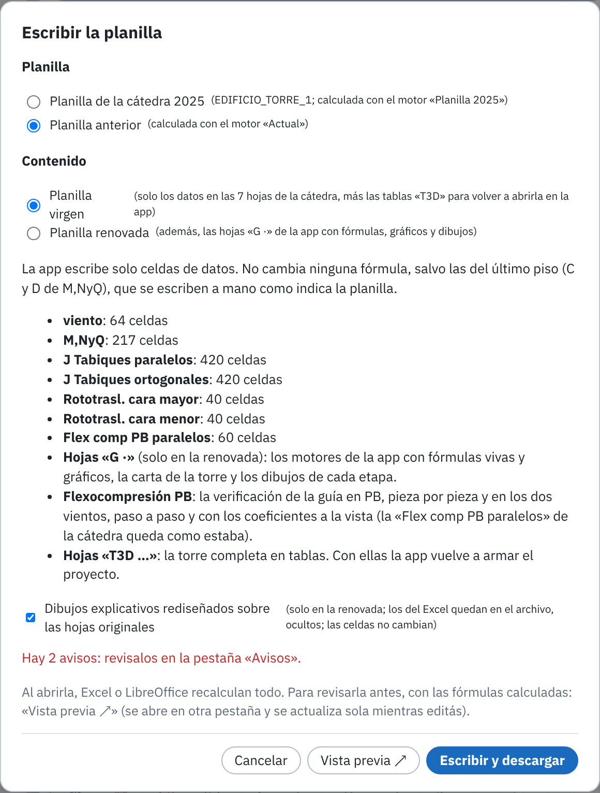
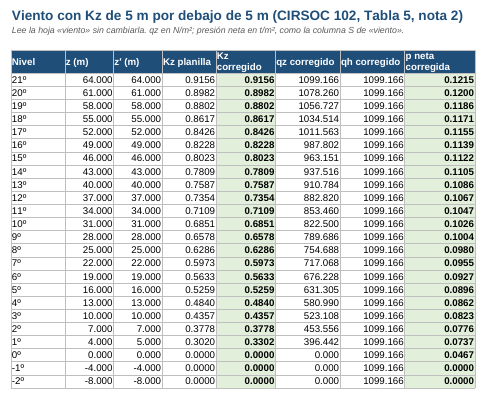
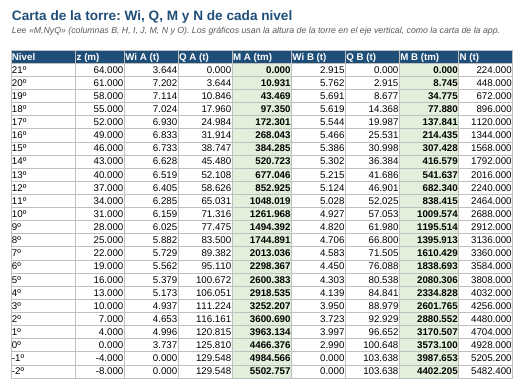

Torre 3D · sexta versión del plan: tus respuestas, la guía «Edificio en torre» 2024, las fundaciones y el informe técnico de Gaspar · noviembre 2026 · en curso: etapa 0.
En una frase. La app pasa a tener cuatro métodos (Planilla virgen, Guía, CIRSOC y FEM), cada uno con sus
reglas de seguimiento, y un quinto modo, Combinado, que corre los cuatro y los compara. Cada método exporta su
propio Excel. Salvo el reporte del FEM, cada Excel es una calculadora cerrada: la app carga los datos una sola vez y
el libro calcula solo.
Qué cambió respecto del primer plan
Se agrega el método Guía (procedimiento analítico paso a paso), que faltaba en el cuadro. Ahora son cuatro columnas.
Un Excel por método: Planilla virgen, Planilla de la guía, Planilla renovada (CIRSOC) y Reporte FEM.
Salvo la virgen, todos los libros se tienen que poder entender sin la app y llevan diagramas de cómo trabaja la torre.
La verificación CIRSOC 201 tiene una versión simple y una completa, en la app y en el Excel («exportar simple o completo»).
El exoesqueleto queda para después, en CIRSOC y en FEM, cuando estén los reglamentos de acero.
Las preguntas abiertas con la cátedra se resuelven así: Planilla y Guía las dejan como la guía, y
CIRSOC y FEM hacen lo que pide el reglamento.
Qué hay de nuevo en esta versión (18/11)
A. Foto de la «planilla renovada» de hoy, para que quede claro de cuál hablo.
C. La guía «Edificio en torre» 2024 leída paso por paso: qué hace, qué ya hace la app y qué falta (esbeltez, flecha directa, armado con barras, corte en dinteles).
D. Fundaciones: el alcance mínimo, tomado de la guía, y cómo se verifica en cada método.
Tus respuestas aplicadas: la planilla de la guía se arma desde la guía; todas las correcciones de hoy son del método Guía (incluido Kz con z mínimo de 5 m, que la guía hace en 2.1.3); el armado queda como opción.
18/11: llegaron el CIRSOC 401 (estudios geotécnicos, 2018) y el Eurocódigo 7, Parte 3 (proyecto asistido por ensayos de campo). Con ellos se cerró la sección D. Respuestas aplicadas: armado de la cátedra por defecto, erratas de la guía anotadas, platea = planta del último subsuelo y CIRSOC 201-2005 hasta que esté la edición nueva.
Sigue faltando el PDF del CIRSOC 201-2005. Las etapas 1 a 3 no lo necesitan; la 4 sí (sección 9).
ACuál es la «planilla renovada» de hoy
Hoy, en Exportar, el diálogo «Escribir la planilla» ofrece dos contenidos. La virgen es la que mejoramos:
las 7 hojas de la cátedra, más «Flexocompresión PB», «Elementos especiales» (si hay) y las tablas «T3D». La
renovada es la virgen más las hojas «G ·», que la app agregó en la fase 2.

Foto 1. El diálogo de hoy. «Contenido»: Planilla virgen o Planilla renovada.

Foto 2. Una hoja «G ·» de la renovada de hoy: «G · Viento corregido» (Kz con z mínimo de 5 m).

Foto 3. Otra: «G · Carta de la torre» (Wi, Q, M y N de cada nivel), que lee M,NyQ.
La renovada de hoy tiene 26 hojas:
las 7 de la cátedra;
8 «G ·»: Viento corregido, Carta de la torre, Sección real, Planta, Perfiles y áreas (app), Rotación muro por muro, Peso por muro y, si hay, las del exoesqueleto;
10 «T3D» y «Flexocompresión PB».
El problema es el que vimos: mezcla fórmulas con números puestos por la app y repite datos.
Con el plan: la virgen queda como está. La renovada de hoy desaparece, y sus hojas «G ·» se reparten así:
Hoja de hoy
Pasa a
G · Viento corregido, G · Carta de la torre, G · Rotación muro por muro, G · Peso por muro
Planilla de la guía (son todas correcciones de la guía)
G · Sección real, G · Planta
Planilla de la guía y Planilla renovada (hojas «Secciones» y «Planta»)
G · Perfiles y áreas (app), G · Niveles agrupados
Hoja «Datos» de cada libro (son datos que pone la app)
G · Exoesqueleto, G · Balance tabiques + exo
Etapa 8 (CIRSOC y FEM con acero)
G · Dibujos de la app
Reporte FEM y las imágenes marcadas de cada libro
La nueva «planilla renovada» es otra cosa: un libro CIRSOC con el estilo de la virgen.
BLo que encontré en la bibliografía (revisión del 18/11)
Subiste a main seis reglamentos. Los leí enteros en lo que toca a una torre de tabiques. El hallazgo más
importante: el 101 y el 102 que subiste son las ediciones 2025, no las de 2005. La planilla y la guía usan el
102-2005. Eso le da al método CIRSOC un valor didáctico extra, porque el alumno ve qué cambió en el reglamento.
Archivo
Qué es
Para qué lo usamos
Reglamento-CIRSOC-102-25 (292 págs., con comentarios)
Viento, edición julio 2025, basada en ASCE 7-10 con cambios de 7-16 y 7-22
CIRSOCFEM cargas de viento, frecuencia, torsión, combinaciones (Apéndice B), servicio
Reglamento-CIRSOC-101-25 (122 págs.)
Cargas permanentes y sobrecargas, edición julio 2025
CIRSOCFEM D y L (Tabla 4.1), combinaciones (art. 2.3.2), vuelco (art. 1.3.5)
reglamento_301 (CIRSOC 301, julio 2005)
Estructuras de acero para edificios
Exoesqueleto (etapa 8)
CIRSOC-302 (julio 2005)
Elementos de tubos de acero
Exoesqueleto: diagrid y barras tubulares
CIRSOC-303 (julio 2009)
Acero conformado en frío
Poco uso en una torre; quizás en elementos secundarios del exo
INPRES-CIRSOC 103, Parte III (2018)
Sismo · construcciones de mampostería
Casi nada para tabiques de hormigón (pregunta 7)
CIRSOC-401-Reglamento (2018) y UNE-ENV 1997-3 (llegaron el 18/11)
Estudios geotécnicos · Eurocódigo 7, Parte 3
Fundaciones (sección D)
Falta: CIRSOC 201-2005
Hormigón armado
Sin él no se puede hacer la verificación CIRSOC (etapa 4)
7-edif torre 2024 y guía viento torre cirsoc2005 (llegaron el 18/11)
La guía de predimensionado y la de viento
Guía método y planilla (sección C)
Qué cambia del 102-2005 (planilla y guía) al 102-25 (método CIRSOC)
Figura B. Lo que más cambia es la velocidad: el 102-25 da velocidades «de resistencia» y por eso el viento entra
en las combinaciones con 1,0 en lugar de 1,6. Hay que explicarlo así para que el alumno no crea que el viento «aumentó un 50 %».
Respuestas que salieron de los textos
Combinaciones (101-25 art. 2.3.2 y 102-25 Apéndice B.3.2): 1,4 D · 1,2 D + 1,6 L · 1,2 D + 1,0 W + L ·
0,9 D + 1,0 W. El Apéndice B dice que se usan «hasta tanto el reglamento del material adopte factores a los niveles
de este reglamento»: con el CIRSOC 201-2005 van estas, no las del 201 (que tienen 1,6 W).
Kd = 0,85 (Tabla 1.6-1) solo se incluye cuando se usan esas combinaciones. Ke = 1 está permitido siempre (Mar del Plata está al nivel del mar).
Frecuencia (art. 1.9.2 y 1.9.3): se puede usar la aproximada si h < 90 m y h < 4·Lef. Para tabiques de
hormigón hay una expresión propia, na = 117,3·√Cw / h, donde Cw suma el aporte de cada tabique (área, largo y altura).
Es ideal para la planilla renovada; el FEM la reemplaza por el modal.
Vuelco (101-25 art. 1.3.5): se tiene que considerar, y en el método CIRSOC se verifica con 0,9 D + 1,0 W
(la resistencia tiene que igualar o superar el efecto). Ya no es «coeficiente ≥ 1,5». La presión en el suelo está en la sección D.
Deformación (102-25, comentario C B.4.2): la combinación de servicio es D + 0,5 L + Wa, con el viento de un
período de retorno menor (suele usarse 10 años). Los límites de deriva habituales son 1/600 a 1/400 de la altura
del piso o del edificio. Son orientativos (comentario, no obligatorio). (Pregunta 6.)
CLo que hace la guía «Edificio en torre» 2024, paso por paso
Leí la guía de predimensionado (28 págs.: torre de viviendas en Neuquén, 2 subsuelos, PB de 4 m y 20 pisos de 3 m)
y la guía de viento (2015). Las dos usan el CIRSOC 102-2005, procedimiento analítico. El método Guía y su
planilla siguen este orden.
Figura C. El procedimiento de la guía. Cada caja es una o más hojas de la planilla de la guía.
Paso de la guía
Qué hace
¿Lo hace la app hoy?
1 · Esbeltez
λ = h/L: mayor que 3, el viento importa; entre 5 y 10, problemas de vuelco; desde 10, difícil de materializar
no se agrega (indicador)
2.1 · Viento (2.1.1 a 2.1.10)
V de la ciudad, Kd = 0,85, I por categoría, exposición, Kz constante por debajo de 5 m, Kzt, G = 0,85 con control de F = 1/T (T = 0,08·h/√L·√(h/(L+h))), cerrado, GCpi ±0,18, Cp 0,8 / −0,5 (L/B), qz, p = qz·G·Cp − qh·GCpi y acción conjunta
sí (viento + Kz de 5 m de «G · Viento corregido»)
Peso propio
G = q·B·L·n.º de losas, con los subsuelos con su propia planta; con sobrecarga 0,9 y sin sobrecarga 0,7 t/m²
sí (M,NyQ)
2.2 · Vuelco
Me/Mv ≥ 1,5 con G sin sobrecarga y brazo hasta el borde de la base; W y hw con el trapecio; e = Mv/N en el núcleo central; gráfico W + G en el tercio medio
sí (M,NyQ L99, funicular)
2.3 · Tensión del terreno
Platea: σ = −G/F ± Mv/(B1·L1²/6) ≤ σt adm (dato del estudio de suelos), con G con sobrecarga
sí (M,NyQ N89 y N90)
3 · Planilla de características
Wi, Q, M, N descargado y cargado en cada nivel, con diagramas
sí
4.1 · J
J de cada tabique; piezas en U con Steiner (alas y alma, con el % de cada parte)
sí
4.2 · Flecha
f = qv·h⁴/(8·E·J) ≤ h/500, con qv = promedio de la carga y h hasta la fundación
parcial: la app usa el J mínimo de la planilla; se agrega la fórmula directa
4.3 y 4.4 · Eje de inercia y rigidez relativa
Varignon con las áreas; reparto por J (traslación)
sí
5 · Flexocompresión en PB
σ = −N/F ± M/W; N = Pp + q·área·losas; almas a flexocompresión, alas con el par M/z
sí (Guía/CIRSOC de hoy)
5 · Armadura
T = σ·b·x/2, As = T/σe; cuantía 0,8 % en 2 capas; barras (por ejemplo, Ø12 c/14); Fe horizontal 1/5; mínimos Ø8 c/20 y Ø6 c/25
parcial: da As y cuantía; falta proponer barras y la armadura horizontal
5 · Corte en dinteles
Con aberturas: τ = (Qj·S/Jj)·h piso / (h dintel·b) ≤ τ adm (24 kg/cm² en H30)
no: la app modela las aberturas pero no verifica el dintel; se agrega
Anexo · Rototraslación
Muro por muro, con los perpendiculares (alas de T6)
sí
Erratas de la guía. El texto tiene algunos números que no cierran:
qz a 7 m es 426,17 en una tabla y 453,42 en la otra;
el momento en PB es 4463,8 tm en la tabla y 6025,2 tm en el texto;
el corte en PB es 126 t en la tabla y 204,8 t en el diagrama;
x vale 78 cm en el texto, 1,05 m en el esquema y 67 cm si se calcula.
Propuesta: el método Guía sigue el procedimiento (da los números bien) y las pruebas comparan con la guía, dejando anotada cada diferencia (aceptado el 18/11).
DFundaciones: lo mínimo necesario
La guía fija el alcance: fundación directa (platea) considerada rígida, apoyada en un suelo del que solo se
conoce la tensión admisible del estudio de suelos. No calcula capacidad de carga, asentamientos ni pilotes. Las
fundaciones las mantenemos en ese alcance. Los dos textos que subiste lo confirman:
CIRSOC 401 (2018) es el reglamento de estudios geotécnicos: dice cómo se investiga el suelo y que el
informe da las «recomendaciones geotécnicas… parámetros para el diseño geotécnico» (art. 7.4). El diseño de las
fundaciones va en el CIRSOC 402, «en preparación» (art. 1.2). Para nosotros: la tensión admisible es un
dato del estudio, como en la guía.
Eurocódigo 7, Parte 3 trata de cómo sacar parámetros del suelo de los ensayos de campo (SPT, CPT, placa).
Las fórmulas de capacidad de carga y de área efectiva con carga excéntrica están en la Parte 1, que no
está. Con el alcance de la guía no hace falta: el área efectiva queda fuera.
Un dato didáctico del 401 que sí sumamos, como información: la profundidad mínima de investigación es la
mayor entre 6 m y el plano de fundación más 2 veces el ancho de la zapata (art. 3.5.6.2). En una platea de 18 m de ancho da
≥ fundación + 36 m. Sirve para que el alumno vea qué estudio de suelos pide su torre.
Figura D. La presión bajo la platea y el dato del suelo. La guía usa la primera; la segunda aparece si la resultante sale del núcleo central; la tercera recuerda de dónde sale el único dato del suelo.
Datos mínimos (hoja «Datos»)
Platea: B1 × L1. Por defecto, la planta del último subsuelo, como en la guía (22 × 18 m).
Nivel de fundación (la app ya lo tiene: fondo del último subsuelo).
σt adm del estudio de suelos (la guía usa 2,5 kg/cm²). Es el único dato del suelo.
Platea por defecto: la planta del último subsuelo (respuesta del 18/11), editable.
Qué se verifica en cada método
Control
Planilla virgen
Guía
CIRSOC y FEM
Vuelco
M,NyQ L99 tal cual
Me/Mv ≥ 1,5 con G sin sobrecarga (2.2)
0,9 D·brazo ≥ 1,0 W·hw (101-25, art. 1.3.5 y combinación 0,9 D + 1,0 W)
Resultante
e ≤ b'/6 (M,NyQ M99)
e en el núcleo central; gráfico W + G en el tercio medio
Igual; si sale, contacto parcial (Figura D, centro)
Presión en el suelo
M,NyQ N89 y N90
σ = −G/F ± M/W ≤ σt adm, con G con sobrecarga (2.3)
Cargas de servicio D + L + W contra σt adm del estudio geotécnico (CIRSOC 401, art. 7.4); sin tracción, y si la resultante sale del núcleo central, contacto parcial
Estudio de suelos
—
—
Informativo: profundidad mínima de investigación (CIRSOC 401, art. 3.5.6.2)
Queda fuera de alcance, en todos los métodos: la capacidad de carga calculada (fórmulas de Terzaghi o Brinch Hansen), los asentamientos, los pilotes y el diseño estructural de la platea.
EInforme técnico de Gaspar (17/11): etapa 0 antes de reorganizar
Gaspar subió docs/informes/analisis-tecnico-torre-3d.html, una auditoría de la app (no del cálculo
estructural). Su conclusión: el motor está bien separado y probado, pero antes de seguir hay que proteger la
importación y el guardado, hacer que un archivo dé siempre los mismos resultados y que la versión web funcione sin
red. Los hallazgos 1, 4, 5 y 6 siguen presentes en esta rama.
#
Hallazgo
Dónde entra en el plan
1
Un archivo importado puede ejecutar código (nombres que llegan como HTML a los rótulos del 3D)
etapa 0 los datos del proyecto se escriben siempre como texto
2
Un proyecto inválido puede pisar el guardado; los fallos del guardado no se avisan
etapa 0 lector único que valida JSON, Excel, Sheets y el guardado del navegador antes de activar el proyecto
Sin red la versión web no abre; borra cachés ajenas del mismo dominio
etapa 0 precaché generado en el build, con prefijo propio
5
El mismo archivo da resultados distintos (motor y método salen del navegador)
etapa 1 el método va dentro del proyecto y se pasa explícito al motor; formato .torre3d.json con versión de esquema y de fórmulas
6
«Todo verifica» promete más de lo que se controla
etapa 1 «Verifican los controles calculados», informativos aparte, y el método a la vista
7
Las plantillas de la cátedra se publican
Pregunta 12: permiso de la cátedra
8–11
Pruebas en los pull requests, una sola copia del HTML descargable, actualizar Vite y Vitest, separar el estado de la app
Mantenimiento, después de la etapa 1
1Los cuatro métodos y el combinado
Figura 1. Cada método tiene sus reglas y su Excel. El combinado no tiene reglas propias: usa los resultados de los otros cuatro.
Método
Reglas de seguimiento
Para qué sirve en clase
Excel que exporta
Planilla virgen
La planilla de la cátedra tal como está (versión anterior o 2025), con sus simplificaciones: G = 0,85, sin control de frecuencia, rototraslación de la planilla, flexocompresión de la pieza entera.
Lo que el alumno entrega. La app la replica celda por celda.
Planilla virgen (calculadora, sin cambios de forma)
Guía
El procedimiento analítico de la guía y de las clases (rotación muro por muro del Anexo, almas y alas por separado, funicular, tercio medio, J mínimo).
Entender de dónde sale cada número de la planilla, a mano.
Planilla de la guía (calculadora paso a paso, con diagramas)
CIRSOC
CIRSOC 101 (cargas), 102 (viento) y 201 (hormigón), con verificación simple o completa.
Ver lo que pide el reglamento y en qué se simplifica la cátedra.
Planilla renovada (calculadora, simple o completa, con diagramas)
FEM
Las mismas reglas del CIRSOC; cambia solo cómo se reparte el viento entre las piezas (modelo de la torre) y la frecuencia sale del análisis modal.
Ver lo que las hipótesis de la rototraslación no muestran: corte, muros que no llegan arriba, deriva.
Reporte FEM (datos y diagramas, no calculadora)
Combinado
Ninguna propia.
Comparar los cuatro y explicar cada diferencia.
A definir (pregunta 3)
2Cada método se arma con cinco capas
Para que los métodos queden ordenados, cada uno elige una opción en cada capa. Donde dos métodos comparten la capa,
usan el mismo código. Eso evita que dos partes de la app calculen lo mismo de dos formas distintas y deja ver,
en el combinado, de qué capa sale cada diferencia.
Figura 2. Una caja que abarca varias columnas es una sola función compartida por esos métodos. Por ejemplo, CIRSOC y FEM
se diferencian en la capa 3 (y por eso en la 5): el FEM no es otra norma, es un reparto más preciso con las mismas reglas.
Qué hace cada método en cada capa (detalle)
Capa
Planilla virgen
Guía
CIRSOC
FEM
Armado
Método de la cátedra por defecto (especificación, sección 7); el de la app, como opción
Secciones reales de la app: J y área reales; curvos, oblicuos y calados con su sección real
Viento
Fórmulas de la hoja «viento» tal cual (incluido lo que la planilla hace distinto)
CIRSOC 102-2005 como la guía (2.1.1 a 2.1.10): Kz constante por debajo de 5 m, G = 0,85 con aviso si F < 1 Hz, acción conjunta barlovento − sotavento; viento en PB con el criterio C
CIRSOC 102-25, procedimiento direccional (cap. 2): V según la categoría de riesgo (Mar del Plata, cat. II: 62,5 m/s), Kz (Tabla 1.13-1), Kzt, Kd = 0,85, Ke, G = 0,85 si n1 ≥ 1 Hz y Gf si no (art. 1.9), Cp barlovento y sotavento, carga mínima 0,75 kN/m² (art. 2.1.5), cuatro casos de la Fig. 2.4-8. En el FEM, F sale del modal.
Pesos
Como «Flex comp PB»: Ng con 0,7 t/m² y Nq con 0,9 t/m²
Como la guía, muro por muro
CIRSOC 101-25: D y L (Tabla 4.1) por separado, combinadas según el art. 2.3.2 del 101-25 y el Apéndice B del 102-25. Lo más desfavorable de cada combinación (por ejemplo, 0,9 D + 1,0 W para la tracción y el vuelco)
Reparto
Rototraslación de la planilla, con sus particularidades (O = G + N, sumas cortadas), como hoy
Anexo de la guía: muro por muro, con las unidades bien
La misma de la guía, para cada caso de carga del CIRSOC
Modelo pseudo-3D con losa rígida: corte, altura parcial, reparto que cambia en altura
Verificación
Pieza entera (hoja Flexocompresión PB) contra σbk, sin coeficiente de seguridad; vuelco y suelo de M,NyQ
Almas a flexocompresión y alas «haciendo un par», con su N; tracción y cuantía de 0,8 %; vuelco ≥ 1,5, tercio medio, funicular
Simple: muro por muro con el método empírico (art. 14.5) cuando corresponde, cuantías mínimas (art. 14.3) y corte de muros (art. 11.10). Completa: diagrama de interacción N-M de cada pieza, corte, cuantías y esbeltez. Las dos con φ y combinaciones. Vuelco con 0,9 D + 1,0 W. Artículos del 201 a confirmar cuando esté el texto.
Deformación
J mínimo para flecha h/500 (hoja J)
Flecha y deriva de la ménsula equivalente con viento de servicio (D + 0,5 L + Wa); límite orientativo 1/600 a 1/400
Deriva y giro de cada piso, del modelo
Lo más importante para enseñar. El CIRSOC 201 no verifica como la guía. La guía compara tensiones de
servicio contra σbk. El CIRSOC mayora las cargas (1,2 D + 1,0 W + L…), reduce la resistencia (φ) y compara resistencias. La
app y la planilla renovada lo van a decir con esas palabras, para que el alumno no lo lea como «la guía con mejores números».
3Qué pasa con lo que la app hace hoy
Hoy hay tres botones que se cruzan. Se reemplazan por un solo selector de método. Nada se pierde: cada cosa pasa a un lugar fijo.
Figura 3. De ocho combinaciones posibles a cuatro métodos con nombre, más el combinado.
Hoy
Pasa a
Motor «Actual» / «Planilla 2025»
Sub-opción «versión» del método Planilla virgen (y de su Excel)
Armado «App» / «Planilla»
Opción dentro de Planilla virgen y Guía (por defecto, el de la cátedra); CIRSOC y FEM usan el de la app
Valores «Guía/CIRSOC»: Kz con z mínimo de 5 m, rotación muro por muro, flexocompresión de almas y alas, M de rotación con unidades, J completo en todas las filas
Método Guía
Valores «Guía/CIRSOC»: controles de frecuencia, torsión de la Fig. 9 y carga mínima
Método CIRSOC (hoy son solo avisos; pasan a cambiar el cálculo)
Viento en PB, criterio C (franja de PB fuera del corte de los tabiques)
Método Guía
Planilla renovada de hoy (hojas de la cátedra + hojas «G ·»)
Deja de existir. Sus hojas «G ·» se reparten entre la Planilla de la guía, la renovada nueva y el reporte FEM (sección A)
Exoesqueleto (hojas «G · Exoesqueleto» y «Balance»)
Queda como está hasta la etapa del exo (CIRSOC y FEM con reglamentos de acero)
4Los Excel: calculadoras cerradas
Reglas para todos los libros, salvo la virgen
Un dato se escribe una sola vez. Se carga en la hoja «Datos», en blanco. Todas las demás celdas son fórmulas que leen de «Datos» o de una hoja anterior.
La app solo llena «Datos». Ninguna otra celda tiene un número calculado por la app. Lo que con fórmulas razonables no se puede calcular entra como dato a la vista, en blanco, y el alumno lo puede cambiar: el área de influencia de cada muro, cómo se arma cada pieza y la frecuencia (si viene del FEM).
Se entiende sin la app. Cada hoja es un paso, con título, qué se calcula, la fórmula escrita, las unidades y el artículo del reglamento o la sección de la guía.
Lleva diagramas. Los gráficos de Excel leen las celdas, así que cambian solos si el alumno cambia un dato: viento en altura, corte y momento, planta con las piezas, reparto, tensiones, diagrama N-M. Lo que Excel no puede dibujar vivo (el 3D, la planta con contornos curvos) va como imagen con el aviso «dibujo del momento de exportar».
Misma estética que la cátedra. Es la que ya usamos en «Flexocompresión PB»: título azul, encabezados en mayúsculas, amarillo = fórmula, blanco = dato, verde/rojo = verifica, negativos en rojo.
Se vuelve a abrir en la app. La hoja «Datos» es a la vez lo que lee la app, así que desaparecen las tablas «T3D» duplicadas.
Se verifica como la virgen. LibreOffice recalcula el libro y cada celda tiene que dar igual que el método en la app.
Figura 4. Cómo circulan los datos dentro de la planilla de la guía y de la renovada. La app no escribe nada más allá de «Datos».
Los cuatro libros
Libro
Tipo
Hojas (propuesta)
Diagramas
Planilla virgen
Calculadora. Las 7 hojas de la cátedra sin cambios.
Las 7 de la cátedra + «Flexocompresión PB» + «Elementos especiales» (si hay) + tablas para reabrir
Los de la cátedra (no se agregan)
Planilla de la guía
Calculadora paso a paso, en el orden de la guía
Léame · Datos · 1 Diseño (esbeltez) · 2 Viento (102-2005, 10 pasos) · 3 Pesos y vuelco · 4 Fundación (platea) · 5 Planilla de características (Q, M, N) · 6 Secciones, eje de inercia y flecha · 7 Rototraslación · 8 Flexocompresión y armadura · 9 Corte en dinteles · Resumen
Presión y fuerzas en altura, M-N-Q, planta con ejes y CR, reparto de cada pieza, tensiones de cada muro, funicular
Planilla renovada
Calculadora CIRSOC, simple o completa al exportar
Léame · Datos · 1 Viento CIRSOC 102 (frecuencia, G/Gf, casos de torsión) · 2 Cargas y combinaciones · 3 Secciones · 4 Reparto por caso · 5 Verificación 201 (simple: muro por muro; completa: + diagrama N-M y corte) · 6 Deformación · Resumen
Los de la guía + los casos de carga de la Fig. 9 + el diagrama N-M de cada pieza
Reporte FEM
Reporte de datos (valores, no calculadora): es el más simple
Léame · Modelo (nudos, piezas, losas) · Modal (períodos y formas) · Reparto en altura · Deriva por piso · Verificación CIRSOC · Comparación con la rototraslación
Formas modales, corte de cada pieza en altura, deriva, deformada, planta con giros
Figura 5. Maqueta de una hoja de la renovada, con la estética de la cátedra: dato en blanco (viene de «Datos»), fórmula en
amarillo claro, resultado clave en amarillo fuerte, artículo al lado y gráfico que lee las celdas. Los números son ilustrativos.
5Verificación CIRSOC simple y completa
Las dos opciones van en la app y en el Excel. En el Excel se elige al exportar («simple» o «completo»): el simple es un
libro más corto; el completo agrega las hojas de interacción N-M y de corte.
Figura 6. La simple se puede hacer a mano. La completa muestra por qué la pieza verifica o no: cuánto le falta o le sobra a cada combinación.
6Cómo queda organizado el código
Figura 7. Todos los métodos devuelven el mismo tipo de resultado (ResultadoMetodo). La interfaz, los diagramas y los Excel no necesitan saber qué método corrió.
Pruebas de oro, que no pueden fallar nunca:
Planilla virgen = la planilla, celda por celda (como hoy).
Guía = los números del ejemplo de la guía y del Anexo.
FEM en modo Euler, con muros de altura completa = rototraslación de la guía.
Cada libro Excel recalculado en LibreOffice = su método en la app.
Cada capa es una función pura con su propia prueba. Un cambio en el viento CIRSOC no puede mover un número de la planilla virgen.
El evaluador de la vista previa aprende las funciones que usen los libros nuevos.
7Etapas
Figura 8. Orden y dependencias. La etapa 1 es la base de todo y no cambia ningún número.
0
hechaSeguridad y datos (informe de Gaspar, sección E): hallazgo 1 (datos como texto), 2 (lector único que valida) y 4 (sin red). La bibliografía y las respuestas ya están, salvo el PDF del CIRSOC 201-2005, que se necesita recién en la etapa 4. Está lista cuando un archivo con HTML en los nombres se ve literal, un archivo roto no pisa el guardado y la app abre sin red.
1
hechaReorganizar sin cambiar números. (Las carpetas por capa del motor se arman cuando llegue la primera capa nueva, en la etapa 3.) Carpetas por capa, ResultadoMetodo, selector único de método. El método elegido se guarda en el proyecto y se pasa explícito al motor (hallazgo 5); el resumen dice qué método calculó y separa lo informativo (hallazgo 6). Está lista cuando las 413 pruebas siguen pasando y la virgen da exactamente lo mismo que hoy.
2
hechaMétodo Guía. Se separa de los valores «Guía/CIRSOC» de hoy (casi todo el código ya existe). Se suma lo que la guía hace y la app no: esbeltez, flecha directa, armado con barras y corte en dinteles (sección C). Está lista cuando reproduce el ejemplo de la guía y el Anexo (T1, alas de T5, porcentajes de rotación), con las erratas anotadas.
3
hechaCIRSOC cargas: 101 (D y L), 102 completo (frecuencia, G/Gf, casos de la Fig. 9, carga mínima) y combinaciones. Está lista cuando da igual que ejemplos resueltos a mano con las tablas del reglamento.
4
hechaCIRSOC 201: verificación simple y completa. Está lista cuando da igual que ejemplos de los comentarios del reglamento o de bibliografía que pases, más pruebas de casos límite.
5
5a y 5b hechasExcel. Primero el kit común (hoja «Datos», estilo, gráficos, verificador) con la planilla de la guía; después la renovada, simple y completa. Está lista cuando LibreOffice da igual que la app en todas las celdas, en varias torres de prueba.
6
hechaFEM: se trae la rama motor-fem (pseudo-3D y modal) dentro de la estructura nueva y se arma el reporte. Está lista cuando pasa la prueba de oro (Euler = guía) y da igual que OpenSees y Pynite.
7
hechaCombinado: la tabla de los cuatro métodos, con la diferencia en % y la capa de la que sale cada diferencia.
8
Exoesqueleto con CIRSOC 301/302, en CIRSOC y FEM (más adelante).
8Riesgos y cómo se controlan
Riesgo
Control
La reorganización cambia, sin querer, un número que los alumnos ya conocen
Etapa 1 sin cambios de resultado y pruebas de oro de la virgen celda por celda
Si el armado por defecto pasa a ser el de la cátedra, cambian algunos números que se ven hoy (hoy viene el de la app)
El armado de la app queda como opción; por defecto el de la cátedra (respondido); la app avisa al cambiarlo
Un número del CIRSOC sale de memoria y no del texto
Cada tabla y coeficiente se carga desde el PDF que subas, con artículo y página en el código y en la hoja
Hay cálculos que en Excel quedan ilegibles (interacción N-M, corte de secciones compuestas)
Se resuelven con una tabla de puntos visible (por ejemplo, 20 posiciones del eje neutro) y un gráfico, sin macros ni «Buscar objetivo»
Las imágenes no se actualizan si el alumno cambia datos en el Excel
Todo lo que depende de datos va como gráfico de Excel; las imágenes llevan el aviso «dibujo del momento de exportar»
El evaluador de la vista previa no conoce funciones nuevas
Se amplía con pruebas, y se compara con LibreOffice en cada libro
9Bibliografía: qué está y qué falta
Texto
Estado
CIRSOC 101-25 y 102-25 (con comentarios)
está revisados (sección B)
CIRSOC 301, 302 y 303 (acero)
está para la etapa 8
INPRES-CIRSOC 103, Parte III
está (mampostería; pregunta 7)
CIRSOC 201-2005 (hormigón armado), reglamento y comentarios
falta el PDF se usa la edición 2005 hasta conseguir la nueva; imprescindible para la etapa 4: cap. 9 (φ), 10 (flexión y axial), 11 (corte), 14 (muros)
Guía «Edificio en torre» 2024 y guía de viento (2015)
está revisadas (sección C). Falta la clase 5 (rototraslación), si existe aparte
Mapa de velocidades de servicio (Figura C AB.4.2-1 del 102-25)
está en el PDF como figura; hay que leer el valor de Mar del Plata a mano (pregunta 10)
CIRSOC 401 (2018) y Eurocódigo 7, Parte 3 (UNE-ENV 1997-3)
está revisados (sección D). Alcanzan para el alcance de la guía; la Parte 1 del EC7 no hace falta
10Preguntas
Respondidas
Pregunta
Respuesta
Planilla de la guía
No existe: se arma desde la guía (sección C)
Correcciones de hoy: ¿guía o CIRSOC?
Todas son de la guía (Kz con z mínimo de 5 m, criterio C, rotación muro por muro, J completo)
Armado
Queda como opción; por defecto, el de la cátedra
Erratas de la guía
El método Guía da los números bien y anota la diferencia con el texto (aviso en la app y nota en la planilla)
Fundaciones
Alcance de la guía; σt adm es dato del estudio (CIRSOC 401); sin área efectiva (sección D)
Platea por defecto
La planta del último subsuelo, editable
CIRSOC 201
Edición 2005 hasta conseguir la nueva; después se actualiza
Planilla y Guía con el 102-2005
Sí: la guía es del 102-2005 (2.1)
Vuelco y deriva en CIRSOC
Salen del 101-25 y del Apéndice B del 102-25 (sección B)
Gráficos vivos y dibujos fijos (19/11)
Sí: lo que depende de datos va como gráfico de Excel; lo demás, imagen marcada
Alcance geográfico (19/11)
La app tiene que servir en toda la Argentina, no solo en Mar del Plata: el sismo entra (ver la pregunta 7 nueva)
Torsión (19/11)
El viento CIRSOC lleva siempre los cuatro casos de la Fig. 2.4-8; «simple / completa» es solo para la verificación del hormigón
Recubrimiento (19/11)
Lo elige el alumno en «Datos» (f'c sale del H; acero ADN 420)
Reabrir la virgen (19/11)
Mandan las hojas de la cátedra para lo que tienen; las tablas «T3D» completan la geometría; la app lista las diferencias
Límite de deriva (19/11)
Lo elige el alumno: 1/400, 1/500 (por defecto, como la guía) o 1/600; se verifica la torre entera y cada piso
Datos del viento CIRSOC (19/11)
Cubrir todas las situaciones: las tres categorías de riesgo, exposiciones B, C y D, factor topográfico, todas las ciudades de la tabla y viento de servicio con recurrencia elegible (10, 25, 50 o 100 años)
Abiertas (ninguna frena la etapa 1; las respondidas el 19/11 pasaron arriba)
1. PDF del CIRSOC 201-2005. No está en el repo. Hace falta para la etapa 4.
2. Versión de la planilla. ¿Siguen las dos (anterior y 2025), solo en el método Planilla virgen?
Propuesta: sí.
3. Excel del combinado.
Propuesta: un reporte «Comparación de métodos» con la tabla y gráficos superpuestos, y un botón para descargar los cuatro libros juntos.
7. Sismo en toda la Argentina. Para usar la app en zonas sísmicas (Mendoza, San Juan, Salta…) hace falta el INPRES-CIRSOC 103 Parte I (construcciones en general: zonas, espectro, método estático) y la Parte II (hormigón armado). La Parte III que subiste es de mampostería y no aplica a tabiques de hormigón. ¿Los subís? El sismo entraría en CIRSOC y FEM como otro caso de carga (método estático equivalente), en una etapa nueva después de la 4.
11. Sheets. ¿Los alumnos entregan por Google Sheets? Si sí, el hallazgo 3 pasa a la etapa 0.
12. Plantillas de la cátedra. ¿La cátedra autorizó distribuirlas públicamente? Si no, el alumno sube su copia al exportar (hallazgo 7).
Torre 3D · plan de métodos y planillas · rama claude/dazzling-ritchie-36ebib · documento para decidir, sin código.